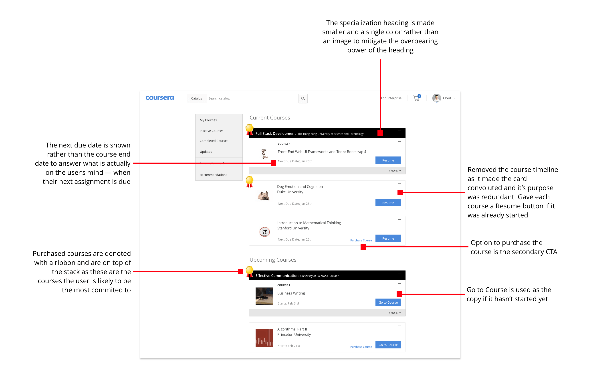

Overview
Massive Open Online Courses, or MOOCs for short, were something that was a big part of my life in high school. I was in love with the wealth of topic offerings online and often took multiple courses at a time.
However, after chatting with a few friends who were also taking MOOCs, I realized something interesting — I was one of the few that ever took more than one MOOC at the same time. This became the inspiration of my design challenge:
How do we increase the number of courses a user takes on Coursera?
And so, I blocked out a few hours a day for the rest of the week and got to work.
Research
I started off by trying to get a deeper understanding of Coursera’s platform and business objectives -- going through the entirety of the site, reading various blog posts by Coursera, and watching interviews on Andrew Ng & Daphne Koller talking about the product.
From there, I jumped into talking to current users of the platform.
Through these interviews, I discovered a few critical things that would heavily influence the direction of this project.
- Users mentioned they disliked searching for courses and that it was hard to find the courses they wanted.
- Users said navigating the site didn’t feel smooth at times but had trouble specifying what particular actions didn’t feel smooth.
- None of the users ever took two courses concurrently for more than a week.
- Only one user ever paid for a course
I wanted to learn more about why many of them felt confused navigating the site, so my first step was to sketch a quick sitemap to better understand the site flow.
The sitemap was a start but I still needed to know more.
To address that issue, I messaged three of the previous interviewees to do a quick usability test. I tasked them with finding courses that matched certain criteria and had them speak their thoughts out loud as they performed the task.
Through these three interviews, the key takeaways were:
- Users wanted to defer the decision on whether they wanted to take a course in the future. One person saved a course page to Pocket, another had them open in a new tab, while the other just mentioned it verbally.
- Users wanted to hear what other students thought about the course.
- Users frequently went to the course page just to find out the start and end date of the course.
- On the dashboard screen, one user searched something just to get to the course search page before clearing that search bar and selecting a category.
Since I was working on a limited timeline, I decided to move on towards brainstorming possible solutions.
After a day of brainstorming potential solutions and some competitor research, I came up with three ideas to improve Coursera’s user experience.
Simplified Site Flow
Initially, I outlined the site flow as a way to help me learn more about the platform, but after thinking through it further, I hypothesized that a simplified site flow will benefit the user as well.
As such, I redesigned the flow with an aim to to reduce the amount of friction it takes to search for a course and reduce the cognitive overhead when navigating between and within courses.
Original
Redesigned
My thinking here was — Why would you want to take more courses if there’s a lot of friction in finding new ones and if taking new ones messes with your existing workflow? I hypothesized that by simplifying the user flow throughout the site, users would be more open to adding new complexities (courses) to their user flow.
Empowered Search Experience
I included a “+” and an “Purchase” button to the course card. The “+” button enrolls the user in the course and adds it to their dashboard in one click. The “Purchase” button will prompt a pop-up giving them the option to purchase the course and receive a certificate upon its completion. In the case of a specialization, the “+” button is removed and the “Start Trial” button, which starts their 7-day free trial for specializations, replaces the Purchase button.
In addition, using the insights gained from listening to the users, I revamped the list of available filters as well as redesigned what information could be gained with a glance at any course’s card:
Original
Redesigned
Design Decisions
If it becomes easier to discover and save interesting courses, then the average user will take more of them. Spreading out the amount of friction an user has to face in the process of finding a course to starting a course will increase the completion rate of that process.
Reorganized Dashboard
I also had some hesitations regarding the convoluted dashboard screen and the lack of consistency on it. Why does only the most recent specialization course get the detailed screen while more recent non-specialization courses and non-recent specialization courses get the bare minimum? As a whole, the dashboard was lacking a well-defined hierarchy with the specializations visually overpowering single courses and making it confusing to see where one course ends and another starts.
The redesigned dashboard works with the previously mentioned features to entice the user to hoard courses that they may potentially take in the future. The structure is also more organized with a lesser visual disparity between specialization and non-specialization courses. Purchased courses are also emphasized and higher in the stack order to give them a feeling of more importance as well as making it more convenient for the user to access. I hypothesize that visually highlighting this difference would lead to greater conversions from free to paid courses as well.
Original

Redesigned
Design Decisions

Simplifying the dashboard hierarchically and visually for multiple courses would make the user more open to having multiple courses on their dashboard and less likely to remove them. Visual clutter = increased perceived complexity. Taking multiple courses should not feel like a complex task.
Reflections
Overall this was a fun challenge to tackle for a few days. The ideas I found here are still somewhat raw and unrefined but with more time, it‚Äôd be interesting to whip up a quick prototype to put in from of some users to get their feedback. Perhaps sometime during the upcoming summer üòâ
© Albert Dong, 2019. All Rights Reserved.